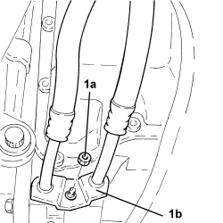
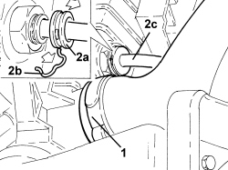
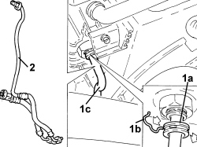
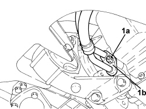
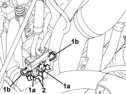

2130A27 DELIVERY AND RETURN DUPLEX PIPING OF AUTOMATIC GEARBOX OIL TO COOLING RADIATOR - R R
- Path
- Procedures > 21 GEARBOX UNIT > 2130 AUTOMATIC TRANSMISSION WITH DIFFERENTIAL > 2130A AUTOMATIC TRANSMISSION ASSEMBLY > 2130A27 DELIVERY AND RETURN DUPLEX PIPING OF AUTOMATIC GEARBOX OIL TO COOLING RADIATOR - R R
- Kind
- repair procedure (removal / refitting; the operation number is the code)
- Applies to
- engines: 2.2, 2.4 JTD 20v; all production periods
- Interactive page
- https://sloeber94.github.io/elrnDB-fCrm/en/#/194002323
Applies to: engines: 2.2; all production periods
 Removing
Removing
 Refitting
Refitting- Position the vehicle on a lift.
Op. 5530B52 BATTERY SUPPORT/DRIP TRAY - R.R
Op. 7055B54 UNDER ENGINE PROTECTION/GUARD - R.R.
Op. 0010T44 CHANGE AUTOMATIC TRANSMISSION FLUIDS
1. Undo the nut (1a) and disconnect the flange (1b) for the duplex automatic transmission supply and return pipes to the cooling radiator.

Applies to: engines: 2.2; all production periods
- Undo the radiator coolant drain plug.
1. Loosen the band and disconnect the lower coolant outlet hose from the radiator, radiator side.
2. Retract the safety collar (2a), remove the clip (2b) and disconnect the oil return pipe to the radiator (2c), radiator side.

Applies to: engines: 2.2; all production periods
1. Retract the safety collar (1a), remove the clip (1b) and disconnect the oil supply pipe to the radiator (1c), radiator side.
2. Remove the automatic transmission fluid duplex supply and return pipes to the heating radiator.

Applies to: engines: 2.2; all production periods
Refitting
Removing- Place the automatic transmission fluid duplex supply and return pipes to the heating radiator in their housings.
- Connect the radiator oil supply pipe, radiator side and secure it using the clip.
- Connect the radiator oil return pipe, radiator side and secure it using the clip.
- Connect the radiator lower coolant outlet hose, radiator side, and tighten the band.
- Tighten the coolant drain plug to the radiator.
- Connect the flange for the automatic transmission fluid duplex supply and return pipes to the heating radiator, automatic gearbox side and secure it using the nut.
Op. 0010T44 CHANGE AUTOMATIC TRANSMISSION FLUIDS
Op. 5530B52 BATTERY SUPPORT/DRIP TRAY - R.R
Op. 0010T20 ENGINE COOLANT - CHANGE
Op. 7055B54 UNDER ENGINE PROTECTION/GUARD - R.R.
- Remove the vehicle from the lift.
Applies to: engines: 2.4 JTD 20v; all production periods
Removing
Refitting- Position the vehicle on a lift.
Op. 5530B52 BATTERY SUPPORT/DRIP TRAY - R.R
Op. 7055B54 UNDER ENGINE PROTECTION/GUARD - R.R.
1. Undo the nut (1a) and disconnect the flange for the duplex automatic transmission supply and return pipes to the cooling radiator (1b), automatic transmission side.

Applies to: engines: 2.4 JTD 20v; all production periods
1. Lower protection collars (1a) and withdraw retaining clips (1b).
2. Remove the automatic transmission fluid duplex supply and return pipes to the heating radiator from the thermostat valve.

Applies to: engines: 2.4 JTD 20v; all production periods
- Remove the automatic transmission fluid duplex supply and return pipes to the heating radiator.
Applies to: engines: 2.4 JTD 20v; all production periods
Refitting
Removing- Place the automatic transmission fluid duplex supply and return pipes to the heating radiator in their housings.
- Connect the pipes to the automatic transmission fluid cooling circuit thermostat valve and secure with the clips.
- Connect the flange for the automatic transmission fluid duplex supply and return pipes to the heating radiator, automatic gearbox side and secure it by tightening the nut to the specified torque.
Component | Fastening | dia | Value (daNm) | Validity |
|---|---|---|---|---|
Automatic transmission fluid radiator supply and return pipes | Nut | - | (automatic gearbox side) 0.7 | 2.4 JTD 20v CAE |
Op. 5530B52 BATTERY SUPPORT/DRIP TRAY - R.R
Op. 0010T45 AUTOMATIC TRANSMISSION FLUID CHECK LEVEL AND TOP UP IF NECESSARY
Op. 7055B54 UNDER ENGINE PROTECTION/GUARD - R.R.
- Remove the vehicle from the lift.
Topics linked from this page (6)
- 0010T20 ENGINE COOLANT - CHANGE
- 0010T44 CHANGE AUTOMATIC TRANSMISSION FLUIDS
- 0010T45 AUTOMATIC TRANSMISSION FLUID CHECK LEVEL AND TOP UP IF NECESSARY
- 5530B10 BATTERY - R+R
- 5530B52 BATTERY SUPPORT/DRIP TRAY - R.R
- 7055B54 UNDER ENGINE PROTECTION/GUARD - R.R.